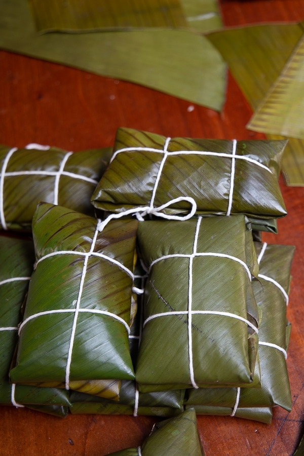

Tamales Navidenas

Description
This rich Costa Rican dish is no qwick feat to prepare, but that's part of
the majic. Generally prepared for Christmas dinner, with family and friends
all pitching in to help at a cooking party called a "Tamalada". In Costa
Rica, Tamales are more than a tasty dish, they are a representation of the
Christmas season and the close relationships of family and friends.
Tamales Navidenas are a delicate mix of pork, veggies, rice, and batter, all
wrapped in a palm leaf and cooked throughout. The labor intensive cooking
process requires many hand, so gather your family and friends and get ready
to have your own special "Tamalada".
Ingredients
- Maeseca Tamale Mix
- Pork Broth
- Butter
- Chicken Bullion
- Cooked Chicken
- Red Pepper
- Costa Rican Arroz Arreglado
- Palm Leaves
Steps
- Useing your hands, mix the entire Maeseca mix with 2 to 3 cups of water.
- Add pork broth and butter.
- Place the mix in a metal mixing bowl over an open flame to cook.
- Lay out peices of palm leaves about the size of a piece of paper each.
- Place a large spoonful of the mix on each palm leaf.
- Add rice and chicken on top of each spoonful of mix.
- Wrap the palm leaf over the mix and tie it closed like ribbon on a Christmas gift.
- Place the tamales in a large pot and boil for 30 minutes
- Remove, unwrap, and enjoy.
Return to Home